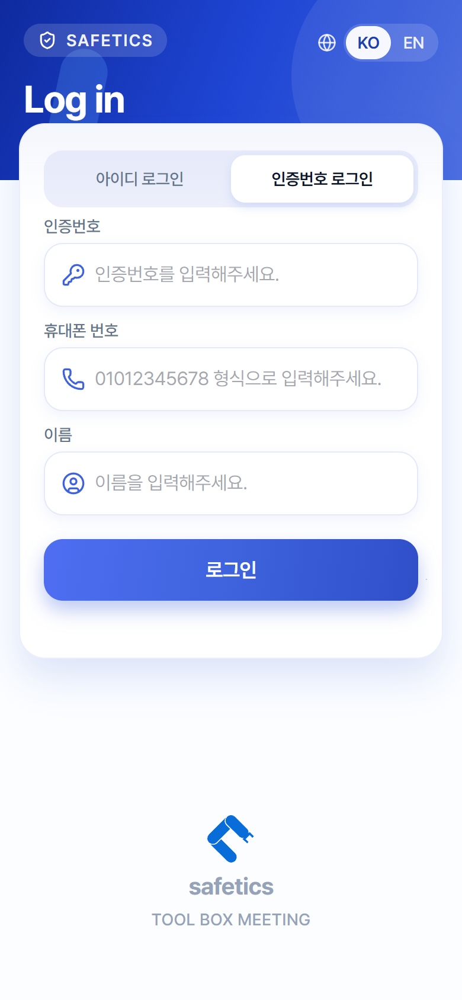
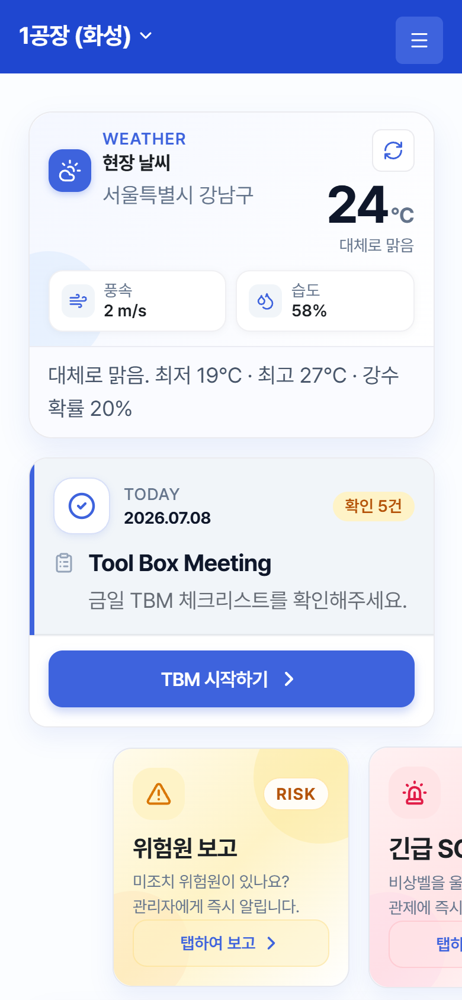
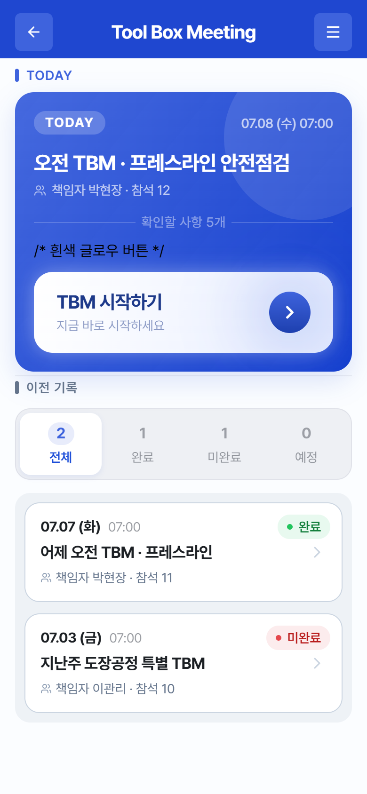
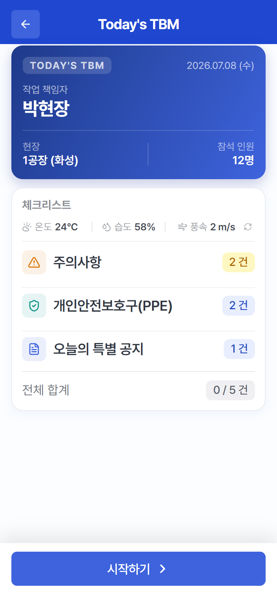
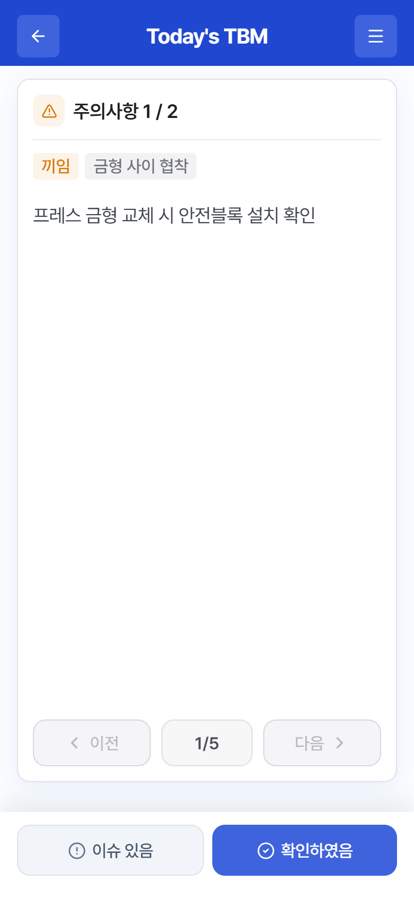

로그인 직후 생체인증 등록 안내가 뜰 수 있습니다 — 1.4 참고. (나중에로 건너뛰어도 됩니다)
💡 팁화면 상단의 KO/EN 버튼으로 로그인 화면 언어를 바꿀 수 있습니다. 로그인이 안 되면 4.4 로그인이 안 될 때를 보세요.
1.3 로그인 — 외부 근로자 (인증번호 로그인) 외부 근로자
현장에 게시된 인증번호와 이름·휴대폰 번호로 로그인합니다.

📷 스크린샷 준비 중 — 로그인(인증번호 로그인)
로그인 화면 — "인증번호 로그인" 탭
인증번호 로그인 탭을 선택합니다.
인증번호를 입력합니다. (현장 게시물 참고 — 자동으로 대문자 처리됩니다)
휴대폰 번호를 입력합니다. (안내: "01012345678 형식으로 입력해주세요.")
이름을 입력합니다.
로그인을 누릅니다.
본인 확인 단계가 이어집니다: 기기에 지문·얼굴 인식이 있으면 생체인증(최초 1회 등록 필수), 없으면 PIN 4자리를 설정·입력합니다.
⚠️ 주의외부 근로자는 보안을 위해 로그인할 때마다 본인 확인(생체인증 또는 PIN)을 거치며, 자동 로그인이 되지 않습니다. PIN을 잊었다면 "PIN을 잊으셨나요?" → 안내에 따라 관리자에게 인증 정보 초기화를 요청하세요. 초기화 후 다시 로그인하면 새 PIN을 설정할 수 있습니다.
💡 팁인증번호가 맞지 않으면 관리자가 번호를 갱신했을 수 있습니다. 현장에 게시된 최신 번호를 확인하세요.
1.4 생체인증·자동 로그인 전체
다음 로그인부터 지문·얼굴 인식으로 빠르게 들어갑니다.
정규직
이메일 로그인 직후 뜨는 안내에서 등록을 누릅니다. (안내 문구: "다음부터 생체인증(지문·얼굴)으로 빠르게 로그인하시겠습니까?")
기기의 지문·얼굴 인식을 완료하면 "생체인증 로그인이 등록되었습니다." 메시지가 표시됩니다.
다음부터 로그인 화면에 생체인증 로그인 버튼이 나타납니다 — 누르면 비밀번호 없이 로그인됩니다.
로그인할 때 로그인 상태 유지를 체크해 두면 앱을 다시 열 때 자동으로 로그인됩니다.
외부 근로자
생체인증(또는 PIN)이 필수입니다. 매 로그인 시 본인 확인을 거치며, 자동 로그인은 지원하지 않습니다.
💡 팁휴대폰을 바꿨거나 생체인증이 계속 실패하면 관리자에게 인증 정보 초기화를 요청한 뒤 다시 등록하세요.
1.5 화면 구성 익히기 전체
홈 화면과 오른쪽 메뉴만 알면 모든 기능에 닿을 수 있습니다.

📷 스크린샷 준비 중 — 홈 화면
홈 화면 — 로그인 직후 첫 화면
홈 화면 (위에서 아래로)
상단 헤더: 현재 현장 이름 (여러 현장 소속이면 ▼ 표시 — 탭하여 현장 선택) + ☰ 메뉴 버튼
홈 상단의 현장 이름 ▼을 탭합니다. (현장이 하나뿐이면 ▼가 없고 전환할 필요도 없습니다)
현장 선택 목록에서 원하는 현장을 탭합니다. 현재 현장에는 ✓ 표시가 있습니다.
파견으로 소속된 현장에는 주황색 파견 배지가 붙습니다.
💡 팁현장을 바꾸면 오늘의 TBM · TBM 기록 · 건의사항이 모두 선택한 현장 기준으로 바뀝니다. "오늘 TBM이 안 보여요"의 흔한 원인이 다른 현장을 보고 있는 경우입니다. 설정 화면에서도 현장을 바꿀 수 있습니다. 외부 근로자는 인증번호의 현장 한 곳으로 고정됩니다.
2. 주요 기능 | 매일 하는 일 — TBM 참여
2.1 오늘의 TBM 시작하기 ★ 홈 또는 Tool Box Meeting 탭전체
오늘 발송된 TBM을 열어 참여를 시작합니다. 매일 가장 자주 쓰는 기능입니다.


📷 스크린샷 준비 중 — TBM 목록 / 세션 요약
왼쪽: Tool Box Meeting 목록(TODAY 카드) / 오른쪽: 시작 전 요약 화면
홈의 오늘의 TBM 카드를 탭하거나, 메뉴에서 Tool Box Meeting으로 이동해 TODAY 카드의 TBM 시작하기를 누릅니다.
요약 화면에서 오늘 내용을 확인합니다: 작업 책임자 / 현장 / 참석 인원, 그리고 체크리스트 구성 — 주의사항·개인안전보호구(PPE)·오늘의 특별 공지별 건수.
⚠️ 주의시작 시각 전에는 버튼 대신 "{시각}부터 참여할 수 있습니다"가 표시되고 눌리지 않습니다. 오늘 TBM이 없으면 "오늘 등록된 TBM 일정이 없습니다."가 표시됩니다 — 발송 여부는 관리자에게 확인하세요. 여러 현장 소속이라면 현장 선택이 맞는지 먼저 확인하세요.
2.2 체크리스트 응답하기 ★ 전체
체크리스트 항목을 한 장씩 읽고 "확인하였음" 또는 "이슈 있음"으로 응답합니다.

📷 스크린샷 준비 중 — 체크리스트 항목
체크리스트 — 항목 1장씩 확인 (하단: 이슈 있음 / 확인하였음)
카드에 표시된 항목을 읽습니다. 상단에 주의사항 1 / 3처럼 분류와 순번이, 항목에 따라 위험인자 / 유해요인 태그가 표시됩니다.
문제 없으면 확인하였음(파란색)을 누릅니다. "확인 완료" 표시가 잠깐 나타나고 다음 항목으로 넘어갑니다.
현장 상태가 항목과 다르거나 문제가 있으면 이슈 있음(회색)을 누릅니다. "이슈 보고됨"이 표시되고, 해당 항목이 관리자에게 TBM 이슈로 자동 접수됩니다.
실수로 잘못 눌렀다면 이전으로 돌아가 다시 응답할 수 있습니다. 응답해야 다음이 활성화됩니다.
모든 항목에 응답하면 참여 완료 단계로 넘어갑니다 — 서명 방식에 따라 2.3 자필 서명 / 2.4 위치 인증 / 확인만(버튼 한 번).
💡 팁"이슈 있음"으로 보고한 내용은 건의사항에서 "[TBM 이슈]"로 확인하고 조치 이력을 추적할 수 있습니다 (3.2).